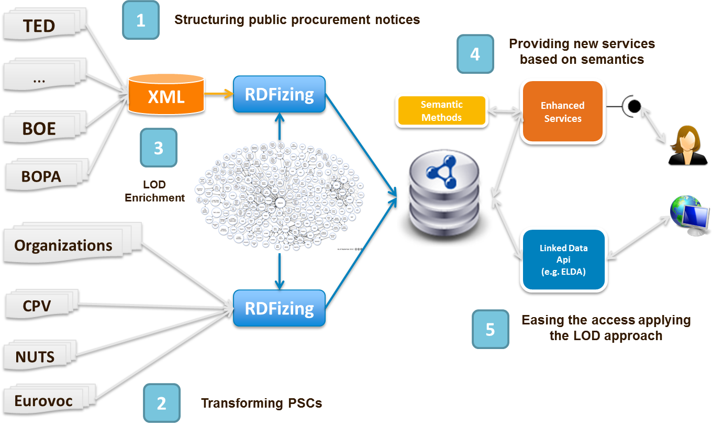
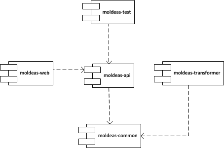

Searching...
Searching...MOLDEAS
Methods On Linked Data for E-procurement Applying Semantics
Introduction
In the European e-Procurement context there is an increasing commitment to boost the use of electronic communications and transaction processing by government institutions and other public sector organizations. The European Commission outlines the following advantages in the wider use of e-Procurement increased accessibility and transparency, benefits for individual procedures, benefits in terms of more efficient procurement administration and potential for integration of EU procurement markets. TED ('Tenders Electronic Daily') is the on line version of the 'Supplement to the Official Journal of the European Union', dedicated to European public procurement (1500 new procurement notices every day but an unified information system pan-European dealing with:
- dispersion of the information;
- duplication of the same notice in more than one source
- different publishing formats
- problems regarding to a multilingual environment and
- aggregation of low-value procurement opportunities, is missing.
Obviously one of the most interesting domains to apply the Linking Open Data (LOD) approach is public procurement information published by governmental contracting authorities. In that sense, the growing commitment to the reuse of public sector information (PSI) and initiatives like semantic web, LOD and the use of Knowledge Organization Systems (KOS) provide building blocks for an innovative unified pan-European information system for the benefit of SMEs.
Main Contributions
This work aims to apply the semantic web and LOD approaches to public procurement notices:
- Transforming government controlled vocabularies such as CPV, CPC, Eurovoc(now available in SKOS), etc. to RDF, RDF(S), SKOS or OWL;
- Modeling the information inside the public procurement notices as web information resources and enriching them with the aforementioned controlled vocabularies, geographical information (e.g NUTS and the information now available in the linked data cloud;
- Publishing the information in a SPARQL endpoint providing a linked data node and
- Providing enhanced services (search and sort, matchmaking, georeasoning, statistics, etc.) exploiting this semantic information through ``advanced algorithms'' based on Spreading Activation (SA) techniques, rule based systems (RBS) and a mixing of them.
Motivating example
The system with these features should be able to answer queries like the next one:
Which public procurement notices are relevant to Dutch companies (only SMEs) that want to tender for contracts announced by local authorities with a total value lower than 170K € to procure Transport and Related Services and a two year duration in the Dutch-speaking region of Flanders (Belgium)?
Functional Architecture Overview
The proposed architecture, is based on two main processes:
- RDFizing. It is the process to transform the data available in the databases about public procurement notices from a XML intermediate format to RDF and enrich them with the vocabularies of the linked data cloud. It also codes the PSCs as linked data.
- Enhanced services. It is the application of the libraries such as ONTOSPREAD and Apache Mahout exploit the linked database and provide services to the customers.

The combination of these building blocks seeks for creating a new innovative way to exploit the information included in public procurement notices in the context of the semantic web and LOD initiatives reusing the existing technologies, vocabularies, etc. Following, the key points of this approach are summarized:
- existing PSCs, information about public procurement notices and organizations are published as linked data;
- the application of SA techniques, RBSs and a mixing of them to provide enhanced services adding value to original information.
Conclusions
The implementation of this work is supposed to afford a new way to exploit the information published inside public procurement notices applying advanced algorithms on LOD. Following we highlight the advantages of this approach: 1) decreasing of the information's dispersion; 2) unification of the data models and formats; 3) implicit support to multilingual and multicultural issues; 4) enrichment of the public procurement notices; 5) alignment with the Digital Agenda for Europe; 6) raise awareness on public procurement opportunities among SMEs and 7) deployment of enhanced services on public procurement notices.
Results
Publications (see Tab)
Software, Try our demo! or check the API documentation
Datasets 5 stars (available via Pubby or explore them via SNORQL), triple Stats at WESO SPARL Endpoint
- CPV (Common Procurement Vocabulary) 2003-278,586 (Check it!)
- CPV 2008-191,368 (Check it!)
- Eurovoc-2,656,015
- PPN (Public Procurement Notice) 2008-677,058 (Check it!)
- PPN 2009-2,398,601 (Check it!)
- PPN 2010-2,590,880 (Check it!)
- PPN 2011-402,264 (Check it!)
- NUTS-36,219
- Total: 9,230,991 million of RDF triples.
TO DO
- Improve the web interface: statistics, charts, etc.
- Search CPV and NUTS codes by description
- Publish the information about organizations
- Add API documentation
- Finish the process of publishing datasets
Search Service in Action
Enter a CPV code by text or code, add new regions using NUTS names (countries are in uppercase)...and enjoy!
Searching...Following some prepared queries are presented in order to show the benefits of using linking open data in the e-procurement sector.
- Give me the public procurement notices in the field of "Transport services (excl. waste transport)" that have been published in France between 2008 and 2009.
- Give me the public procurement notices that have been published (with CPV code in 2003 "61100000" )in France in 2008.
- Give me the public procurement notices in the field of "Industrial machinery" that have been published in France and United Kingdom between 2008 and 2009.
- Give me the public procurement notices about "Repair" that have been published in Spain during 2010 in English.
- Give me the public procurement notices about "Repair" or "Construction" that have been published in Italy and Spain during 2010 in English.
- Give me the code and description of the CPV codes related to "services" in English.
- Give me the code and description of the CPV codes (only categories) related to "services" in English.
- Give me the code and description (in English) of the CPV codes (only categories) and their narrower codes with description (in Greek) related to "services".
Design and Development
The components of the project are designed as follows:

It is a Java-based project:
- Maven, Spring, Apache Lucene, Apache Mahout, etc.
- Some stats: 180 Java classes (intensive of design patterns), 8877 source code lines, +60 Junit test cases
Deployment
- Java library implementing the semantic methods (moldeas-api)
- Web application client at WESO server (this one) and at Google Appengine containing the REST services (moldeas-web).
- Component for RDFizing PSCs and more (moldeas-transformer)
- Component for testing (moldeas-test)
- Component for common utilities (moldeas-common)
Repository
More documentation and the source code is available at MOLDEAS repository (hosted by Google Code).
List of demo services (REST):
List of publications and contributions:
- Jose María Alvarez, José Emilio Labra, Ramón Calmeau, Ángel Marín, Jose Luis Marín. "Query Expansion Methods and Performance Evaluation for Reusing Linking Open Data of the European Public Procurement Notices". Workshop en Tecnologías de Linked Data y sus aplicaciones en España en CAEPIA 2011, 7-11 November - La Laguna, Tenerife, Spain.
- José Luis Marín, Ángel Marín, Mai Rodríguez (Gateway Strategic Consultancy Services); Ramon Calmeau (EXIS-TI); Jose Maria Alvarez, Jose Emilio Labra (Universidad de Oviedo). "Euroalert.net: Building a pan-European platform to aggregate public procurement data and deliver commercial services for SMEs powered by open data". Workshop Share-PSI.eu 2011.
- Jose María Alvarez, José Emilio Labra, Ramón Calmeau, Ángel Marín, Jose Luis Marín. "Innovative Services to ease the Access to the Public Procurement Notices using Linking Open Data and Advanced Methods based on Semantics". 5th International Conference on Methodologies, Technologies and Tools enabling e-Government, 30 June - 1 July 2011 Camerino, Italy.
- Jose María Alvarez and José Emilio Labra. "Semantic Methods for Reusing Linking Open Data of the European Public Procurement Notices". PhD Symposium ESCW 2011. Accepted as Poster.
- Luis Polo, Jose María Alvarez and Emilio Rubiera. "Promoting Government Controlled Vocabularies to the Semantic Web: EUROVOC Thesaurus and CPV Product Classification Scheme". SIEDL 2008. ESWC 2008. (Previous work before MOLDEAS project).
- Jose María Alvarez, Emilio Rubiera and Luis Polo. "Generación automática de ontologías en SKOS de clasificaciones estándar de productos: Common Procurement Vocabulary (CPV)” (Spanish, Proceedings) of CEDI 2007. (Previous work before MOLDEAS project).
Authors:
This work is being accomplished by WESO Research Project within the partnership project "10ders Information Services".
MOLDEAS is part of 10ders Information Services project partially funded by the with code TSI-020100-2010-919 and the European Regional Development Fund (EFDR) according to the National Plan of Scientific Research, Development and Technological Innovation 2008-2011, leaded by Gateway Strategic Consultancy Services and developed in cooperation with Exis-TI and WESO Research Group.
Partially funded by:


© 2011 WESO